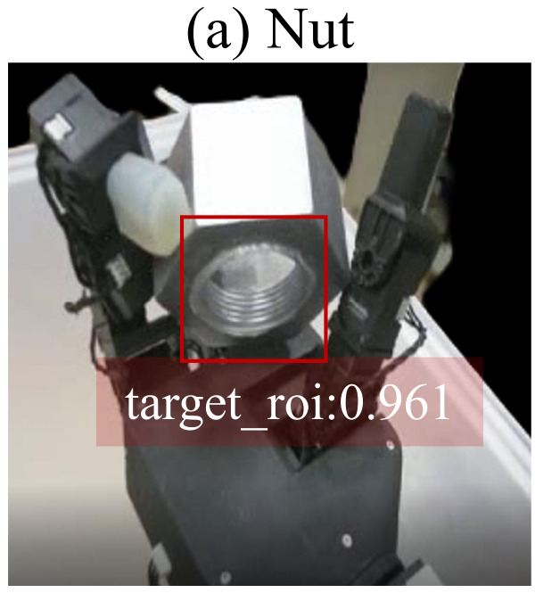
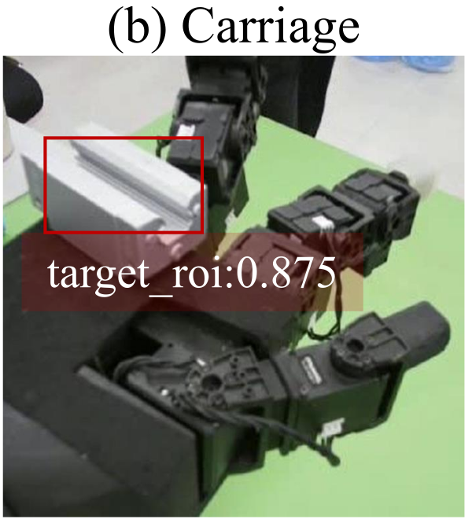
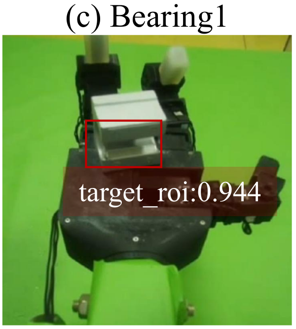
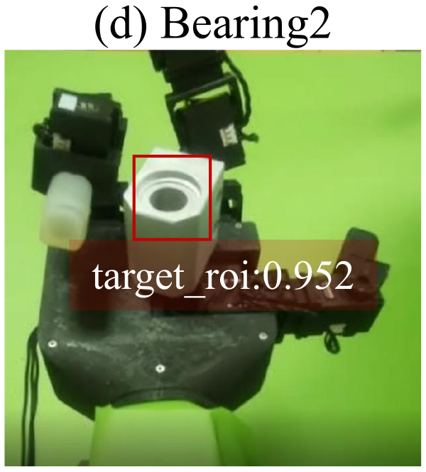

Can a dexterous hand expose hidden inspection regions while the cameras stay fixed?
DRIA learns in-hand part reorientation entirely in simulation and transfers to a real hand using only multi-view RGB observations.
News
Paper submitted to RCIM.
Video Presentation
Video placeholderstatic/videos/presentation.mp4
DRIA video presentation — Replace with the project overview video.
Abstract
Automated visual inspection of complex-shaped industrial parts requires images of critical regions of interest (ROIs), such as internal threads and bearing bores, that are frequently occluded from fixed viewpoints. Existing automated optical inspection (AOI) systems can improve inspection coverage through multi-camera configurations or robot-guided viewpoint adjustment, but these approaches may increase hardware complexity or require additional viewpoint planning. This paper presents DRIA, a framework that instead employs a dexterous hand as an active part-presentation device, reorienting a grasped part until its target ROI is exposed to fixed RGB cameras. To enable RGB-only deployment without real-world demonstrations, a privileged RL teacher is trained in simulation, and its successful rollouts are converted into multi-view vision–action trajectories for training a vision-conditioned diffusion policy (student policy). During real-world deployment, a lightweight visual-alignment step reduces the appearance difference between simulated and real observations, allowing the policy to operate on RGB images alone, without depth sensing, object-pose estimation, or policy fine-tuning. In physical experiments involving 400 trials on four industrial parts, DRIA achieved a complete-task success rate of 65.5% and a target ROI exposure rate of 72.0%. In separate baseline comparisons, DRIA outperformed Action Chunking with Transformers (ACT), deterministic behavior cloning, and open-loop replay in both simulation (77.9% vs. 56.3%, 35.0%, and 23.2%) and physical experiments (68.8% vs. 48.8%, 28.8%, and 16.3%). These results demonstrate the feasibility of dexterous in-hand reorientation as a flexible image-acquisition strategy for automated part inspection.
Fig. 1: Fixed-view and robot-guided inspection versus active in-hand part presentation.
Fixed-view AOI and robot-guided inspection can leave internal threads, rail grooves, and bearing bores occluded. DRIA changes the pose of the grasped part to present the target ROI to fixed RGB cameras.
Contributions
We formulate target ROI image acquisition as an active in-hand part-presentation problem.
We develop a simulation-only teacher–student pipeline: successful trajectories from a privileged RL teacher train a multi-view vision-conditioned diffusion policy (student policy), deployed using fixed RGB cameras and lightweight visual alignment.
We evaluate four industrial parts in 400 physical trials, together with simulation and physical baseline comparisons and ablation studies.
Method
Fig. 2: DRIA pipeline: privileged teacher learning, simulation demonstration generation, and vision-conditioned student learning with real-world deployment.
Instead of moving cameras around a stationary part, DRIA changes the pose of the grasped part to expose a predefined target ROI. A separate policy is trained for each part through three stages:
Stage 1
Privileged Teacher Learning
A privileged RL teacher trained with PPO learns contact-rich in-hand reorientation in Isaac Gym using hand joint states, object pose and velocity, and a part-specific target orientation. The reward encourages orientation alignment while penalizing positional drift and abrupt joint commands.
Stage 2
Simulation Demonstration Generation
Successful privileged RL teacher rollouts are recorded as synchronized three-view RGB observations and 11-dimensional joint-position commands. The dataset contains 3,000 successful trajectories per part, or 12,000 in total, including a short holding phase at the target pose.
Stage 3
Student Learning & Sim-to-Real Deployment
A ResNet18 encoder and conditional one-dimensional U-Net learn an action diffusion policy from simulation trajectories. At deployment, green-background pixels in real camera images are replaced with white to match the simulated appearance. The frozen policy executes action chunks at 15 Hz, without real-world demonstrations, depth sensing, object-pose estimation, or policy fine-tuning.
Fig. 6: Physical inspection cell with a three-fingered hand and three fixed RGB cameras.
Dexterous hand
GX11 three-fingered hand with 11 actuated degrees of freedom.
Fixed RGB cameras
Three Hikvision cameras: camera 2 overhead; cameras 1 and 3 at oblique upper viewpoints on either side.
Deployment
Green background cloth, lightweight HSV background alignment, and a 15 Hz real-time control loop.
Simulation Results
In simulation, DRIA achieves 77.9 ± 0.7% average success and a time-to-finish of 3.7 ± 0.5 s on successful episodes. It has the highest success rate among the evaluated methods that do not use privileged states, while the privileged RL teacher reaches 88.7 ± 0.7%.
Table 1 — Simulation baseline comparison. SR (%) and TTF (s), mean ± standard deviation over three runs. TTF is computed over successful episodes only. Expert RL is a privileged reference and is excluded from best/second ranking. Higher SR and lower TTF are better.
Method
Nut
Carriage
Bearing1
Bearing2
Avg. SR
TTF (s)
Reference
Expert RLprivileged, sim only
91.0 ± 1.0
87.7 ± 1.5
89.3 ± 1.5
86.7 ± 1.5
88.7 ± 0.7
2.1 ± 0.3
Baselines
Replay
22.3 ± 1.5
24.3 ± 2.1
22.7 ± 1.5
23.3 ± 0.6
23.2 ± 1.2
4.5 ± 0.7
CNN-BC
35.7 ± 1.5
34.7 ± 0.6
35.3 ± 2.1
34.3 ± 1.5
35.0 ± 0.7
7.7 ± 1.1
ACT
56.7 ± 1.5
57.7 ± 1.2
59.0 ± 1.0
52.0 ± 2.0
56.3 ± 0.6
6.0 ± 0.7
Ours
DRIA (Ours)
76.7 ± 1.5
79.0 ± 1.0
78.7 ± 1.5
77.3 ± 3.2
77.9 ± 0.7
3.7 ± 0.5
Real-World Results
The physical cell uses an 11-DoF, three-fingered GX11 hand and three fixed RGB cameras. Four parts are evaluated: a 3D-printed hex nut (Nut), an HGH15CA linear-rail carriage (Carriage), and SBR16UU and LHSSK16 bearing units (Bearing1 and Bearing2). Their target ROIs are the internal thread, rail groove, and bearing bores.
Across 400 physical trials (100 per part), DRIA achieves 65.5% complete-task success (262/400; 95% CI: 60.7–70.0%) and 72.0% target ROI exposure (288/400; 95% CI: 67.4–76.2%).
Complete-task success requires the target orientation and a stable grasp at the end of the trial. ROI exposure counts a trial if the target region meets its presentation criterion in at least one camera frame while the part is still held.
In 26 trials, the ROI was exposed before the part was later dropped, highlighting grasp stability as a remaining limitation.
Table 2 — Physical reliability evaluation of DRIA. 100 trials per part, 400 in total. SR_task: complete-task success rate; SR_ROI: target ROI exposure rate.
Part
SR_task
SR_ROI
Nut
65/100 (65.0%)
73/100 (73.0%)
Carriage
61/100 (61.0%)
70/100 (70.0%)
Bearing1
69/100 (69.0%)
71/100 (71.0%)
Bearing2
67/100 (67.0%)
74/100 (74.0%)
Overall
262/400 (65.5%)
288/400 (72.0%)
Existing recordings are retained below. Success/failure pairs await trial labels and corresponding footage.
Nut
Success · ROI Exposed
Video placeholderstatic/videos/real/nut_success.mp4
Nut: success recording — Replace with a verified success trial.Failure
Video placeholderstatic/videos/real/nut_failure.mp4
Nut: failure recording — Replace with a labeled failure trial.
Nut recordings
Nut reorientation · Clip 1
Nut reorientation · Clip 2
Nut reorientation · Clip 3
Nut reorientation · Clip 4
Nut reorientation · Clip 5
Nut reorientation · Clip 6
Carriage
Success · ROI Exposed
Video placeholderstatic/videos/real/carriage_success.mp4
Carriage: success recording — Replace with a verified success trial.Failure
Video placeholderstatic/videos/real/carriage_failure.mp4
Carriage: failure recording — Replace with a labeled failure trial.
Carriage recordings
Carriage reorientation
Bearing1
Success · ROI Exposed
Video placeholderstatic/videos/real/bearing1_success.mp4
Bearing1: success recording — Replace with a verified success trial.Failure
Video placeholderstatic/videos/real/bearing1_failure.mp4
Bearing1: failure recording — Replace with a labeled failure trial.
Bearing1 recordings
Bearing1 reorientation
Bearing2
Success · ROI Exposed
Video placeholderstatic/videos/real/bearing2_success.mp4
Bearing2: success recording — Replace with a verified success trial.Failure
Video placeholderstatic/videos/real/bearing2_failure.mp4
Bearing2: failure recording — Replace with a labeled failure trial.
Bearing2 recordings
Bearing2 reorientation
Fig. 8: Representative physical trajectories of Carriage, Bearing1, and Bearing2: target regions become visible during in-hand reorientation.
Sim-to-Real Consistency
Nut reorientation across the privileged RL teacher, student policy in simulation, and student policy on the physical platform.
Video placeholderstatic/videos/consistency/nut_teacher_sim.mp4
Privileged RL Teacher (Sim)
Video placeholderstatic/videos/consistency/nut_student_sim.mp4
Student Policy (Sim)
Video placeholderstatic/videos/consistency/nut_student_real.mp4
Student Policy (Real)
Fig. 9: Nut reorientation by the privileged RL teacher, the student policy in simulation, and the frozen student policy on the real hand.
Baseline Comparison
In a separate physical comparison with 80 new trials per method (20 per part), DRIA achieves 68.8% complete-task success and 73.8% ROI exposure.
Table 3 — Physical baseline comparison. 80 trials per method, 20 per part. SR_task: complete-task success rate; SR_ROI: target ROI exposure rate.
Method
SR_task
SR_ROI
Baselines
Replay
13/80 (16.3%)
16/80 (20.0%)
CNN-BC
23/80 (28.8%)
25/80 (31.3%)
ACT
39/80 (48.8%)
43/80 (53.8%)
Ours
DRIA (Ours)
55/80 (68.8%)
59/80 (73.8%)
Nut
Replay
Video placeholderstatic/videos/baselines/nut_replay.mp4
Nut · ReplayCNN-BC
Video placeholderstatic/videos/baselines/nut_cnn_bc.mp4
Nut · CNN-BCACT
Video placeholderstatic/videos/baselines/nut_act.mp4
Nut · ACTDRIA (Ours)
Video placeholderstatic/videos/baselines/nut_dria.mp4
Nut · DRIA
Carriage
Replay
Video placeholderstatic/videos/baselines/carriage_replay.mp4
Carriage · ReplayCNN-BC
Video placeholderstatic/videos/baselines/carriage_cnn_bc.mp4
Carriage · CNN-BCACT
Video placeholderstatic/videos/baselines/carriage_act.mp4
Carriage · ACTDRIA (Ours)
Video placeholderstatic/videos/baselines/carriage_dria.mp4
Carriage · DRIA
Bearing1
Replay
Video placeholderstatic/videos/baselines/bearing1_replay.mp4
Bearing1 · ReplayCNN-BC
Video placeholderstatic/videos/baselines/bearing1_cnn_bc.mp4
Bearing1 · CNN-BCACT
Video placeholderstatic/videos/baselines/bearing1_act.mp4
Bearing1 · ACTDRIA (Ours)
Video placeholderstatic/videos/baselines/bearing1_dria.mp4
Bearing1 · DRIA
Bearing2
Replay
Video placeholderstatic/videos/baselines/bearing2_replay.mp4
Bearing2 · ReplayCNN-BC
Video placeholderstatic/videos/baselines/bearing2_cnn_bc.mp4
Bearing2 · CNN-BCACT
Video placeholderstatic/videos/baselines/bearing2_act.mp4
Bearing2 · ACTDRIA (Ours)
Video placeholderstatic/videos/baselines/bearing2_dria.mp4
Bearing2 · DRIA
Ablation Studies
Diffusion ablation: replacing deterministic CNN-BC regression with action diffusion raises simulation success from 35.0% to 77.9%, and physical complete-task success from 28.8% to 68.8%.
Multi-view ablation: compared with the best single camera selected on validation data, three views raise average simulation success from 67.0% to 77.9% and reduce time-to-finish from 5.4 s to 3.7 s.
CNN-BC and DRIA differ only in action generation, providing the diffusion ablation.
Table 4 — Multi-view ablation. Three-view DRIA versus the validation-selected best single camera (camera 2 for all four parts). SR (%), TTF (s), mean ± standard deviation over three runs; averages across parts. ΔSR uses unrounded means and is in percentage points (pp).
Green-background pixels are replaced with white; the hand and part pixels remain unchanged.
Target ROI Detection
A Faster R-CNN detector trained only on simulation images achieves AP@0.5 = 0.940 and F1 = 0.885 on simulation validation images. It is used to evaluate the acquired images and does not control the hand.
In a qualitative check of 60 real frames, it locates the ROI in all 55 ROI-visible frames but also produces false positives in all five ROI-absent frames. Reliable rejection of absent ROIs remains unresolved.
Fig. 10: Target ROI localization in real RGB frames of Nut, Carriage, Bearing1, and Bearing2.

Nut

Carriage

Bearing1

Bearing2
The detector is trained only on simulation images. In the qualitative evaluation of real RGB frames, it locates all 55 visible target ROIs; it also produces false positives in all five ROI-absent frames.
Failure Analysis
Part Dropped after ROI Exposure
In the 400-trial reliability evaluation, 26 trials exposed the target ROI before the part was later dropped.
Failure
Video placeholderstatic/videos/failures/dropped_after_exposure_01.mp4
Part Dropped after ROI Exposure
Grasp Lost during Reorientation
Replace with a description of the labeled grasp-loss cases.
Failure
Video placeholderstatic/videos/failures/grasp_lost_01.mp4
Grasp Lost during Reorientation
Target Pose Not Reached
Replace with a description of the labeled target-pose failures.
Failure
Video placeholderstatic/videos/failures/target_not_reached_01.mp4
Target Pose Not Reached
Scope and limitations. This feasibility study covers four small parts in a controlled cell, with one dedicated policy and one target ROI per part. Multi-ROI inspection, production variation, and defect-level visual assessment remain future work.
Supplementary Video
Nut recordings show the real and simulated camera observations alongside the physical setup. Additional nut clips compare the privileged RL teacher and student policy in simulation.
Nut multi-view deployment overview · Clip 1
Nut multi-view deployment overview · Clip 2
Nut: privileged RL teacher and student policy in simulation
Nut RL / diffusion comparison · Clip 1
Nut RL / diffusion comparison · Clip 2
BibTeX
@unpublished{sun2026dria,
title = {{DRIA}: Dexterous In-Hand Reorientation for Target {ROI} Image Acquisition of Complex-Shaped Industrial Parts},
author = {Sun, Xin and Wang, Shichuang and Deng, Linan and Hua, Feng and Liu, Xing and Cheng, Jun and Yang, Zhanpeng and Qiao, Xuechun and Cheng, Cheng},
note = {Research manuscript},
year = {2026}
}
Acknowledgements
This work was supported in part by the National Science and Technology Major Project on Intelligent Manufacturing Systems and Robots (Grant No. 2025ZD1603003); and in part by the National Natural Science Foundation of China under Grant 62373160, Grant 62503184, and Grant T2525012.